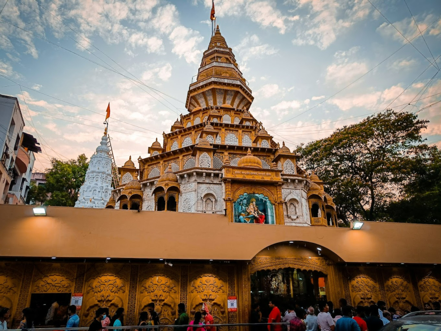
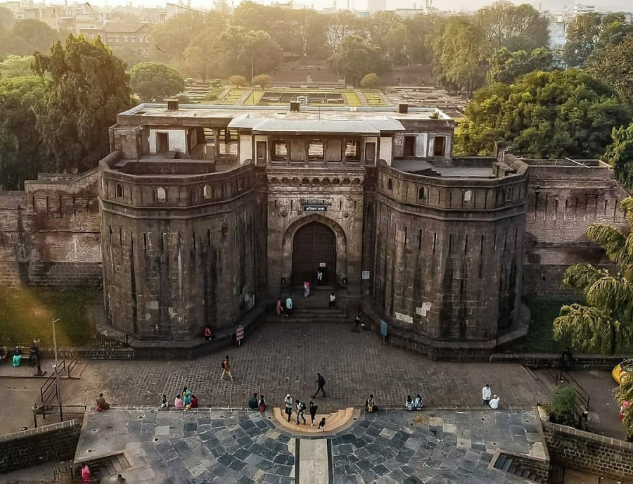
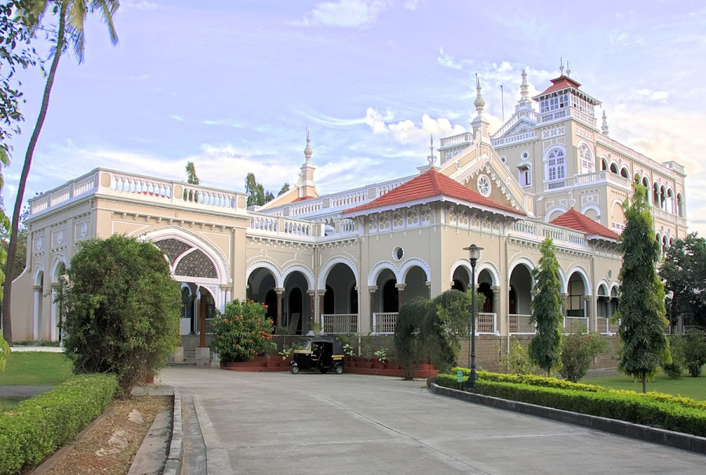
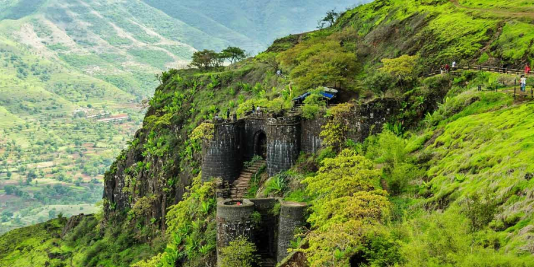
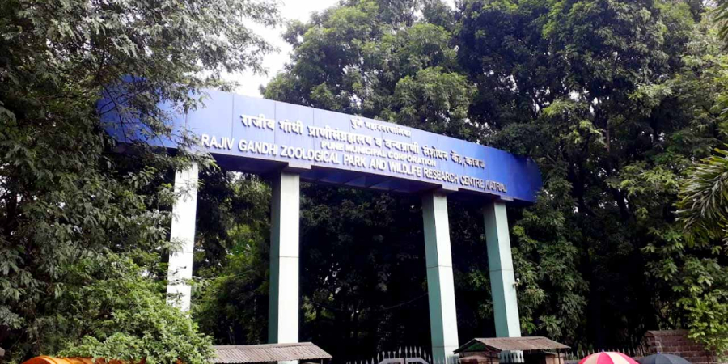
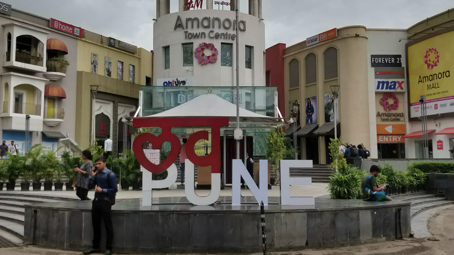
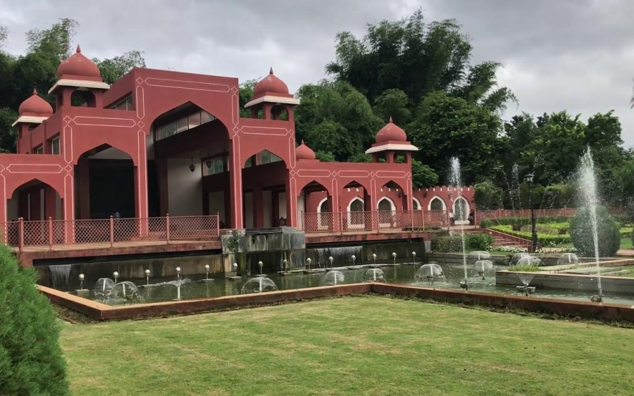
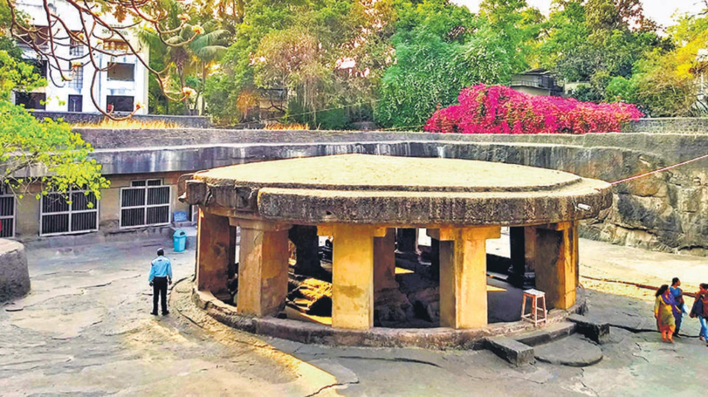
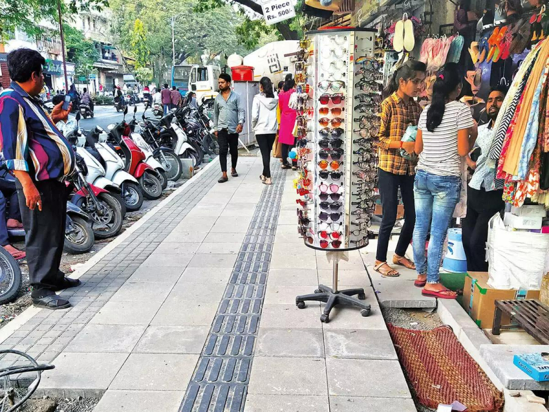
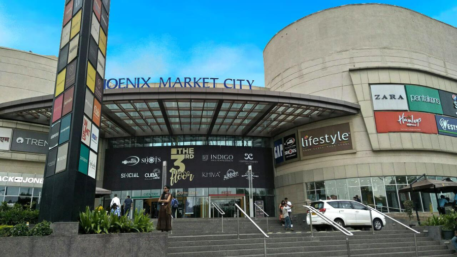

Let’s Explore the “Queen of the Deccan”, Pune.
Pune is a sprawling city in the western Indian state of Maharashtra. It was once the base of the Peshwas (prime ministers) of the Maratha Empire, which lasted from 1674 to 1818. It's known for the grand Aga Khan Palace, built in 1892 and now a memorial to Mahatma Gandhi, whose ashes are preserved in the garden. The 8th-century Pataleshwar Cave Temple is dedicated to the Hindu god Shiva.
Shreemant Dagdusheth Halwai Ganpati Mandir
The Dagadusheth Halwai Ganapati temple is a Hindu Temple located in Pune and is dedicated to the Hindu god Ganesh. The temple is visited by over hundred thousand pilgrims every year. Devotees of the temple include celebrities and chief ministers of Maharashtra who visit during the annual ten-day Ganeshotsav festival. In 1893, Dagdusheth Gadve, a successful sweetmeat seller (or halwai ), made an idol of Lord Ganesha on the advice of his spiritual guru, following the death of his only son in a plague epidemic. The halwai , who was known to have been admired by 'Lokmanya' Bal Gangadhar Tilak, built a second Ganesha idol in 1896.
Shaniwar Wada
Shaniwar Wada is a historical fortification in the city of Pune, India. Built in 1732, it was the great seat of the Peshwas of the Maratha Empire until 1818. Following the rise of the Maratha Empire, the palace became the center of Indian politics in the 18th century.
Shaniwar Wada a 13 storey palace of Peshwas was built by Bajirao-I, in the year 1736.It was head quarter of the Peshwas and it symbolizes Pune's culture. The structure was built giving security the highest priority. The main entrance is known as 'Delhi Darwaja' & others have names like Ganesh, Mastani, Jambhal, Khidki.
Aga Khan Palace
The Aga Khan Palace was built by Sultan Muhammed Shah Aga Khan III in the city of Pune, India. The palace was an act of charity by the spiritual leader of the Nizari Ismaili Muslims, who wanted to help the poor in the neighbouring areas of Pune, who were drastically hit by famine by offering them work.
Historically, the palace holds great significance. Mahatma Gandhi, his wife Kasturba Gandhi and his secretary Mahadev Desai were interned in the palace from 9 August 1942 to 6 May 1944, following the launch of Quit India Movement. Kasturba Gandhi and Mahadev Desai died during their captivity period in the palace and have their Samadhis located over there. Mahatma Gandhi and Kasturba Gandhi have their memorials located in the same complex, near Mula river.
Sinhagad Fort
Sinhagad is an ancient hill fortress located at around 49 km southwest of the city of Pune, India. Previously known as Kondhana, the fort had been the site of many battles, most notably the Battle of Sinhagad in 1670. It is Located near the Pune district in Maharashtra.
Sinhagad Fort has played a vital role in India's freedom struggle. Bal Gangadhar Tilak also known as 'The Father of Indian Unrest', used the fort as a summer retreat. It is here where Mahatma Gandhi after his return from South Africa had a historic meeting with Tilak.
Rajiv Gandhi Zoological Park
The Rajiv Gandhi Zoological Park, commonly known as the Rajiv Gandhi Zoo or Katraj Zoo, is located in Katraj, Pune district, Maharashtra State, India. It is managed by the Pune Municipal Corporation.
In 1997, in order to create a more modern zoo in accordance with the guidelines of the Central Zoo Authority of India, the municipality selected a site in Katraj and started developing a new zoo. The zoo opened in 1999 as the Rajiv Gandhi Zoological Park & Wildlife Research Centre, and initially included only the reptile park, sambars, spotted deer, and monkeys. Although it took until 2005, all of the animals from Peshwe Park were eventually moved to the new site, and Peshwe Park was closed. The snake park has a large collection of snakes, reptiles, birds and turtles. There are over 22 species of snakes with 10 species of reptiles comprising more than 150 individuals. This includes a 13-foot-long king cobra. Information about the snakes is provided in Braille, as well as more conventional formats, and the park includes a library.
Amanora Mall
It is a Food, Fashion & Entertainment Hub, housing food courts, luxury dining restaurants, and more than 1000 national and international brands. Covering a spacious 1.2 million sq. feet of area, Amanora Mall is one of the biggest shopping malls in Pune and is the ultimate hangout spot for people of all ages.
Amanora Mall is one of the largest shopping malls in Pune. Envisioned as an all-day destination, it is famously known as Pune’s premium fashion, food and entertainment (FFE) capital. Developed by the real estate firm City Corporation Limited, this project is spread over a sprawling 1.2 million square feet of space. Designed by the leading New Zealand-based architecture firm Walker Architect, the mall appeals to both Western and Indian sensibilities. Amanora mall houses over 250 stores encompassing more than 1000 national and international brands across premium, lifestyle & everyday fashion retailers. The mall contains over 30 F&B outlets with choices ranging from Oriental to Italian and cafes that serve an array of cuisines for any craving you might have. It is also well-known for its unmatched entertainment centres, with a plush 8-screen multiplex as well as a Family Entertainment Centre that visitors truly enjoy.
Pune-Okayama Friendship Garden
Welcome to the Japanese Garden in Pune. One of its kinds, the Pune Okayama Friendship Garden is the largest Japanese garden outside of Japan, in Asia. Also called the Pu. La. Deshpande Udyan, it was named after the famous Marathi writer and humorist, Pu La Deshpande who received the Padma Bhushan in 1990.
This garden reflects on the Indo-Japanese relationship, as it is inspired by the 300-year old Okayama Korakuen Garden in Japan. Located on Sinhagad Road in Dattawadi, this park offers the perfect blend between nature and concrete, with a natural canal passing through the garden whilst having man-made ponds and waterfalls. Right from lush green plants, Pergolas to sit at and lawns,beautiful flowers and the artificial hills, this garden has everything that will take your breath away. Visitors come here to take a stroll after a stressful day or even better, plan a trip to this garden to explore the wide variety of flora. The garden perfectly resembles the Japanese Yin and Yang theory, laying emphasis on motion and stillness, light and darkness, warmth and cold, representing the authentic Japanese culture.
The Pataleshwar Caves
The Pataleshwar Caves, also referred to as the Panchaleshvara temple or Bhamburde Pandav cave temple, are an 8th century rock-cut Hindu temple from the Rashtrakuta period located in Pune, Maharashtra, India.
The Pataleshwar Caves are in the northern side of Pune, on a rocky hill immediately west of the sangam (confluence) of the Mula and Mutha rivers – sites recommended for temples in historic Sanskrit texts on temple architecture. Surveys of this site done in the 19th-century refer to it as the "Panchaleshvara cave", "Bhamburde caves of Pune", "Pandoo caves", or "Panchaleshvara temple"; they mention it to be situated in a village north of Pune.
FC Road
FC stands for Fergusson College which is an educational institution. Nobody recognizes the street as Gokhale Road which is the official name of the street. FC is one of the areas which have developed immensely over the years. People also refer to FC road as The New MG Road. FC is a complete Commercial Street. It will provide you items from almost all categories like food, fashion, traditional, business, technology etc. In proper words, FC road is ruled by the youngsters of Pune.
oungsters get attracted to FC road because of two main reasons; they are food and fashion. You can find every single fast food company at FC like Dominos, KFC, Pizza Hut, AFC, Barista, Cafe Coffee Day, Subway, Baskin Robins, Venky's Express, Monginis and so much more. These are just the well known branded food junctions, there are also food stalls of which give you variety of sandwiches, chaat, Chinese, masala bhutta, bhel, kola, soda and the list never ends! In the list of restaurants which are enjoyed by families you can find Chaitaniya Parathas, Vaishali, Roopali, Kadhai.
Phoenix Marketcity - Viman Nagar
Phoenix Marketcity Pune, is an integrated mixed-use development incorporating Shopping, Dining, Movies, Entertainment and much more that delivers a holistic lifestyle and leisure experience. As Pune transforms from a traditional, historic city to a commercial metropolis, Phoenix Marketcity Pune, also sets out to change lives in changing times. The mall consists of sprawling courtyard, hypermarket, departmental, bookstore; kids play zone, electronics, toy stores and PVR Cinemas.
One can work, dine, relax in the spa and shop in luxury and style – all at the same time. Apart from the spa and other facilities, the mall has got amazing stores dedicated to art and craft, plus many more attractions.
Video